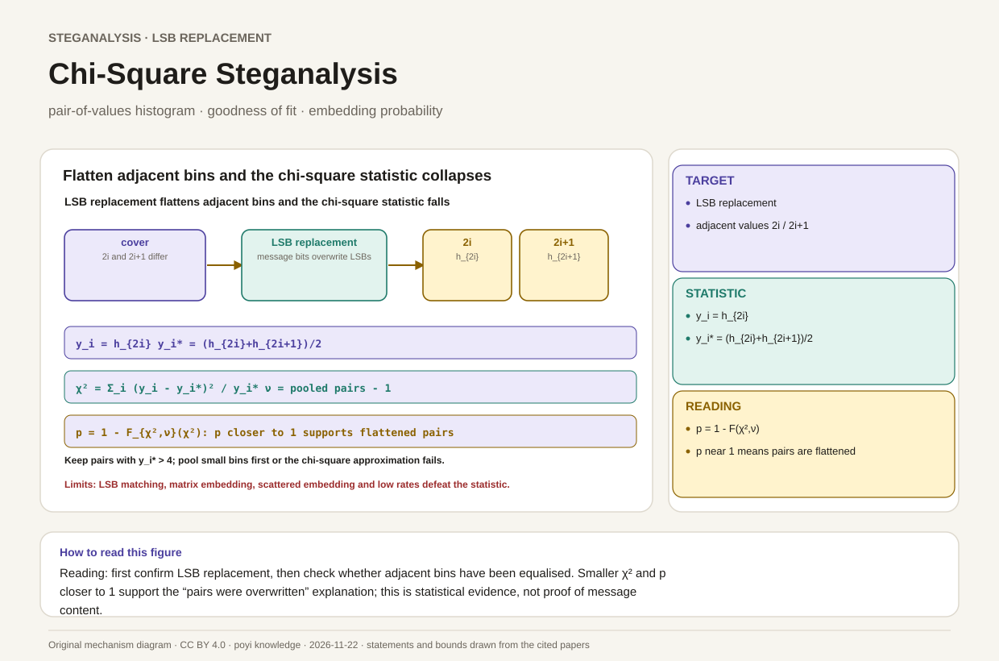
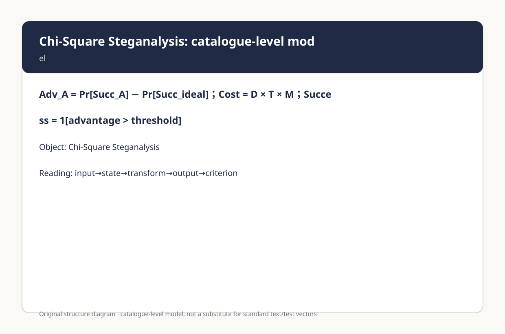

Principles
Attack: Chi-Square Steganalysis (卡方隐写分析). ### The paired-value histogram
LSB replacement overwrites the least significant bit of each sample with a message bit. If the message bits are close to random, samples originally in the adjacent values 2i and 2i+1 are mixed; the higher the embedding rate, the closer the two bins become. Write the observed counts of pair i as h_{2i} and h_{2i+1}. Under the null hypothesis the expected count is y_i^* = (h_{2i} + h_{2i+1}) / 2. ### The chi-square statistic
Using y_i = h_{2i} as the observation, compute
χ² = Σ_i (y_i - y_i^)^2 / y_i^. Keep only pairs with y_i^* > 4. If a pair has too few counts, pool adjacent categories first and reduce the degrees of freedom accordingly. The degrees of freedom ν equal the number of pooled pairs minus one. The statistic measures the deviation between the observed even-bin counts and the paired-average expectation. ### Reading the embedding probability
In the original test, p = 1 - F_{χ²,ν}(χ²), where F is the chi-square cumulative distribution. Smaller χ² and p closer to 1 support the explanation that the paired values have been flattened; a large χ² gives p near 0. This p is not the probability that a secret message exists; it is a goodness-of-fit reading under the LSB-replacement hypothesis. A sliding-window scan can estimate where a sequential embedding ends.

Why it matters
Natural images do not have independent least significant bits; adjacent grey levels or DCT coefficient pairs are usually unequal. LSB replacement turns a pair into interchangeable bins, so “paired equality” becomes a detectable trace. It requires no key and no message content, only a histogram.
A bit-plane visual attack relies on a human looking at the structure of the LSB plane; the chi-square attack turns the same phenomenon into a repeatable statistic. Both target simple LSB replacement and neither is valid for every steganographic scheme.
Matrix embedding, F5, wet-paper coding, spread spectrum and adaptive embedding disturb the paired-value relation; randomly scattered embedding dilutes the statistic in a fixed window. A designer must make the statistical distribution of modifications resemble the cover, not merely write message bits into the LSB.
Applications
- Obtain the suspect carrier and record its format, quantisation tables, colour space and resampling history. 2. Build histograms by value pairs; for DCT coefficients pair adjacent quantised values, and for indexed images follow the palette order. 3. Pool bins whose expected counts are too small, then compute χ² and ν. 4. Read p = 1 - F(χ²,ν) as the strength of the “pairs flattened” explanation, and scan with a sliding window to locate a possible embedding interval. 5. Calibrate against known covers, known embedders and several embedding rates. The report may say “a statistical trace of LSB replacement”, not “the message was extracted”.
Stegdetect combines chi-square, RS analysis and other tests into a candidate filter. Chi-square provides a fast screen for paired-value anomalies; a human or a specialised extractor must still verify the result.

Limits & attacks
- Not LSB replacement: LSB matching, matrix embedding, F5 and wet-paper coding do not guarantee equal paired bins. 2. Randomly scattered embedding dilutes a fixed-window statistic, so the original sequential scan may find no clear interval. 3. A low embedding rate is buried in the cover’s natural noise. 4. Covers whose paired bins are already nearly equal (synthetic images, palette images, strongly quantised images) can produce false positives with high p. 5. Message bits are not random, or the embedder applies statistical compensation. 6. Lossy recompression, cropping, scaling or filtering destroys the trace.
The chi-square test examines a histogram fit, not a cipher. A high p does not prove a secret message, and a low p does not prove its absence. Conclusions depend on the cover, embedder and window parameters, and must be reported with calibration samples.
History
In 1999 Westfeld and Pfitzmann systematised attacks on EzStego, Jsteg, Steganos and S-Tools, combining visual anomalies in the LSB plane with a paired-value chi-square test. They stressed that LSBs are not naturally random and that naive replacement leaves a statistical structure.
In 2002 Provos and Honeyman put chi-square and other detectors into an Internet-scale image scanning framework, and noted that statistical detection only yields candidates; it does not replace key recovery or message extraction. Extended chi-square tests, RS analysis, calibration and machine-learning methods later addressed scattered embedding and low embedding rates.
Worked example & verification
Formal model and reproduction steps
[\mathrm{Adv}^{\mathrm{attack}}_A(\lambda)=\Pr[\mathrm{Game}_A(\lambda)=1]-\frac12]
Chi-Square Steganalysis: the registered public parameters, key material or randomness, and message are mapped through the stated transformation to an output checked against the registered criterion. The worked example is a structural reproduction, not a new test vector; parameter ranges, standard versions and implementation details remain source-bound.
References
- Wikipedia search entry for 卡方隐写分析. https://zh.wikipedia.org/w/index.php?search=%E5%8D%A1%E6%96%B9%E9%9A%90%E5%86%99%E5%88%86%E6%9E%90
- Handbook of Applied Cryptography (Menezes, van Oorschot, Vanstone). https://www.cacr.math.uwaterloo.ca/hac/